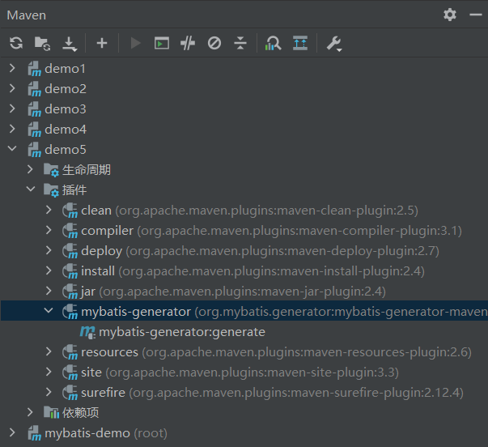
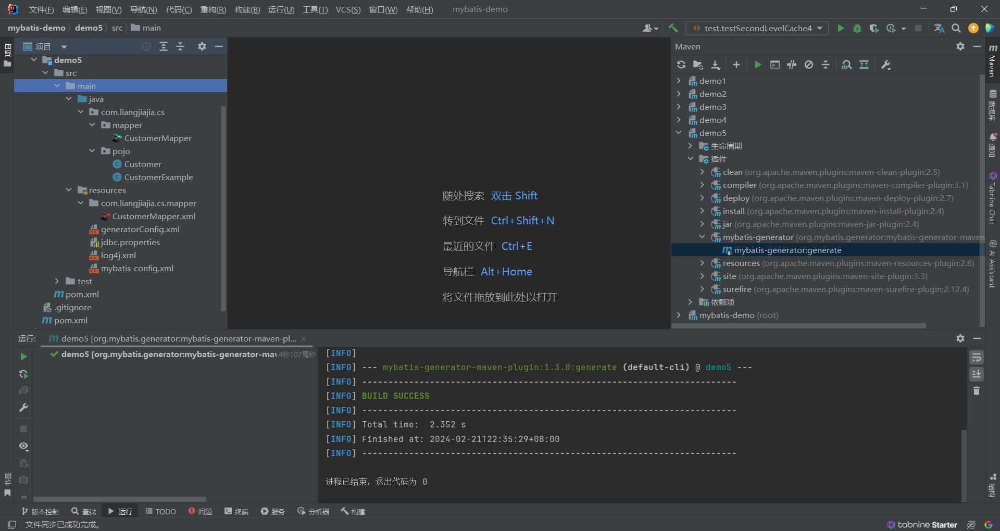
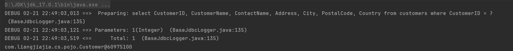
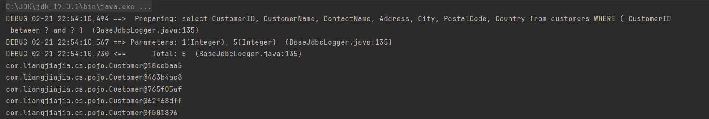
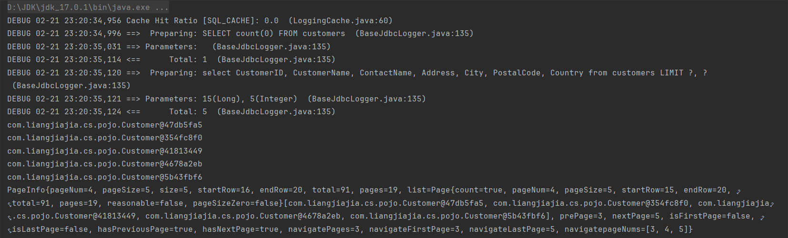

⬇ 参考代码：demo5
参考代码：demo5
MyBatis 逆向工程
1⃣ 添加依赖：
添加依赖：
1
2
3
4
5
6
7
8
9
10
11
12
13
14
15
16
17
18
19
20
21
22
23
24
25
26
27
28
29
30
31
32
33
34
35
36
37
38
39
40
41
42
43
44
45
46
| <?xml version="1.0" encoding="UTF-8"?>
<project xmlns="http://maven.apache.org/POM/4.0.0"
xmlns:xsi="http://www.w3.org/2001/XMLSchema-instance"
xsi:schemaLocation="http://maven.apache.org/POM/4.0.0 http://maven.apache.org/xsd/maven-4.0.0.xsd">
<modelVersion>4.0.0</modelVersion>
<parent>
<groupId>com.liangjiajia.cs</groupId>
<artifactId>mybatis-demo</artifactId>
<version>1.0-SNAPSHOT</version>
</parent>
<artifactId>demo5</artifactId>
<properties>
<maven.compiler.source>17</maven.compiler.source>
<maven.compiler.target>17</maven.compiler.target>
<project.build.sourceEncoding>UTF-8</project.build.sourceEncoding>
</properties>
<build>
<plugins>
<plugin>
<groupId>org.mybatis.generator</groupId>
<artifactId>mybatis-generator-maven-plugin</artifactId>
<version>1.3.0</version>
<dependencies>
<dependency>
<groupId>org.mybatis.generator</groupId>
<artifactId>mybatis-generator-core</artifactId>
<version>1.3.2</version>
</dependency>
<dependency>
<groupId>com.alibaba</groupId>
<artifactId>druid</artifactId>
<version>1.2.21</version>
</dependency>
<dependency>
<groupId>mysql</groupId>
<artifactId>mysql-connector-java</artifactId>
<version>8.0.27</version>
</dependency>
</dependencies>
</plugin>
</plugins>
</build>
</project>
|
2⃣ 创建逆向工程的配置文件 generatorConfig.xml
创建逆向工程的配置文件 generatorConfig.xml
1
2
3
4
5
6
7
8
9
10
11
12
13
14
15
16
17
18
19
20
21
22
23
24
25
26
27
28
29
30
31
32
33
34
35
| <?xml version="1.0" encoding="UTF-8"?>
<!DOCTYPE generatorConfiguration
PUBLIC "-//mybatis.org//DTD MyBatis Generator Configuration 1.0//EN"
"http://mybatis.org/dtd/mybatis-generator-config_1_0.dtd">
<generatorConfiguration>
<context id="DB2Tables" targetRuntime="MyBatis3">
<jdbcConnection driverClass="com.mysql.cj.jdbc.Driver"
connectionURL="jdbc:mysql://localhost:3306/northwind"
userId="root"
password="root">
</jdbcConnection>
<javaModelGenerator targetPackage="com.liangjiajia.cs.pojo" targetProject=".\src\main\java">
<property name="enableSubPackages" value="true"/>
<property name="trimStrings" value="true"/>
</javaModelGenerator>
<sqlMapGenerator targetPackage="com.liangjiajia.cs.mapper" targetProject=".\src\main\resources">
<property name="enableSubPackages" value="true"/>
</sqlMapGenerator>
<javaClientGenerator type="XMLMAPPER" targetPackage="com.liangjiajia.cs.mapper" targetProject=".\src\main\java">
<property name="enableSubPackages" value="true"/>
</javaClientGenerator>
<table tableName="customer" domainObjectName="Customer"/>
</context>
</generatorConfiguration>
|
3⃣ 执行 mybatis-generator 插件的 generator 功能
执行 mybatis-generator 插件的 generator 功能


简单测试：
1
2
3
4
5
6
7
| @Test
public void testSelectByPrimaryKey(){
SqlSession sqlSession = SqlSessionUtils.getSqlSession();
CustomerMapper customerMapper = sqlSession.getMapper(CustomerMapper.class);
Customer customer = customerMapper.selectByPrimaryKey(1);
System.out.println(customer);
}
|

1
2
3
4
5
6
7
8
9
| @Test
public void testUpdateByPrimaryKeySelective(){
SqlSession sqlSession = SqlSessionUtils.getSqlSession();
CustomerMapper customerMapper = sqlSession.getMapper(CustomerMapper.class);
CustomerExample customerExample=new CustomerExample();
customerExample.createCriteria().andCustomeridBetween(1,5);
List<Customer> customers=customerMapper.selectByExample(customerExample);
customers.forEach(System.out::println);
}
|

MyBatis 分页
1⃣添加依赖：
1
2
3
4
5
6
7
| <dependencies>
<dependency>
<groupId>com.github.pagehelper</groupId>
<artifactId>pagehelper</artifactId>
<version>5.2.0</version>
</dependency>
</dependencies>
|
2⃣配置
1
2
3
| <plugins>
<plugin interceptor="com.github.pagehelper.PageInterceptor"></plugin>
</plugins>
|
简单测试：
1
2
3
4
5
6
7
8
9
10
| @Test
public void testPageHelper(){
SqlSession sqlSession = SqlSessionUtils.getSqlSession();
CustomerMapper customerMapper = sqlSession.getMapper(CustomerMapper.class);
PageHelper.startPage(4, 5);
List<Customer> customers=customerMapper.selectByExample(null);
PageInfo<Customer> pageInfo=new PageInfo<>(customers,3);
customers.forEach(System.out::println);
System.out.println(pageInfo);
}
|
